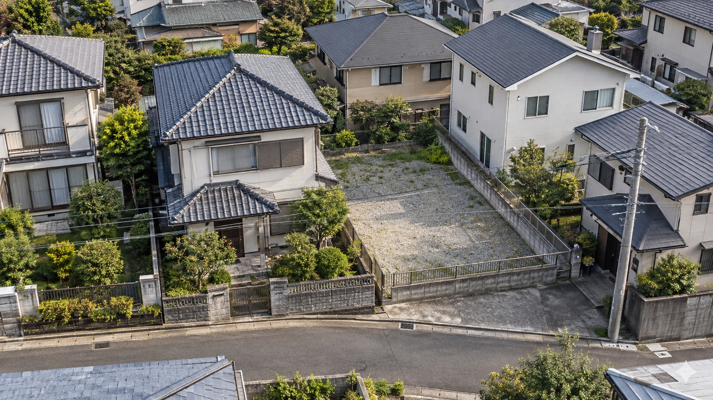

本文へスキップ
LIVE
案件・商談・提携の動きを随時更新しています。
10:00–18:00／水曜定休
03-4400-7994
相談する
ホーム
会社情報
事業紹介
販売物件
サービス
対応エリア
お知らせ
社会貢献
相談する
相談する
ホーム
／
事業紹介
／ 底地・借地／権利調整
Land rights coordination
複雑な権利関係をほどき、
土地の次の可能性へ。
契約・登記・境界・接道と関係者の意向を整理し、売買・同時売却・一体利用・開発を検討します。

04 / Land rights coordination
01
相続コンサルティング
02
不動産コンサルティング
03
仲介事業・買取事業
04
底地・借地／権利調整
05
資産形成ラウンジ「エフクリ」
06
賃貸経営オーナー支援
07
企業向けセミナー事業
08
社会貢献（NBCジュニア）
More business
ほかの事業を見る
01
相続コンサルティング
02
不動産コンサルティング
03
仲介事業・買取事業
04
底地・借地／権利調整
05
資産形成ラウンジ「エフクリ」
06
賃貸経営オーナー支援
07
企業向けセミナー事業
08
社会貢献（NBCジュニア）